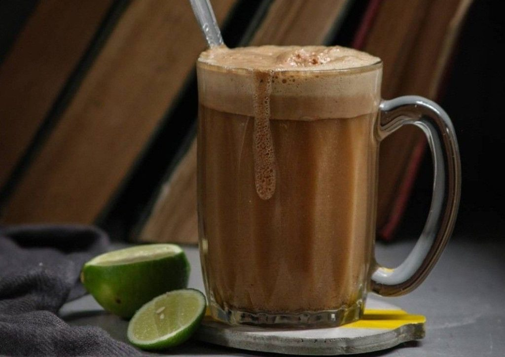

Teh Talua atau dalam Bahasa Indonesia teh telur ini terbuat dari bahan dasar kuning telur dengan teh ini memiliki cita rasa yang khas di lidah. Rupanya, dibalik rasanya yang unik, terdapat sejuta manfaat bagi tubuh manusia. Sajian minuman tradisional ini terlihat menggoda dengan tampilannya menarik dengan 3 layer bertingkat di segelas kaca bening. Tingkatan paling bawah berwarna putih yang merupakan tumpukan susu kental, tingkatan bawah berwarna kecokelatan yang merupakan campuran larutan teh, tingkatan paling atas merupakan gumpalan busa hasil kocokan.
Asal Usul
Dilansir dari Situs Warisan Budaya Tak Benda Kementerian Pendidikan dan Kebudayaan, Teh Talua dulunya disuguhkan oleh santri kepada Tuan-Tuan yang sedang datang berziarah ke Surau. Selain itu, juga disuguhkan untuk jamaah yang melakukan pengajian di malam hari. Teh Talua dianggap menjadi minuman penambah energi, hal ini lantaran para jamaah yang hadir dalam pengajian tersebut akan berlangsung hingga larut malam. Maka dari itu, minuman ini dianggap bisa menambah energi saat pengajian. Selain itu, Teh Talua juga dikonsumsi oleh Tukang Saluang dan Pendendang ketika sedang menampilkan pertunjukan Saluang. Menurutnya, minuman tersebut dianggap bisa menambah energi dan kemampuan begadang karena pertunjukan berlangsung sampai larut malam.